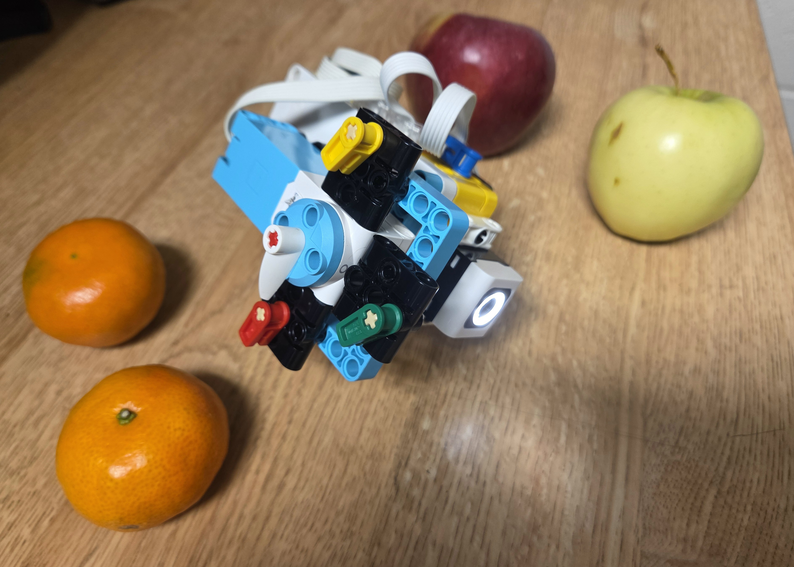
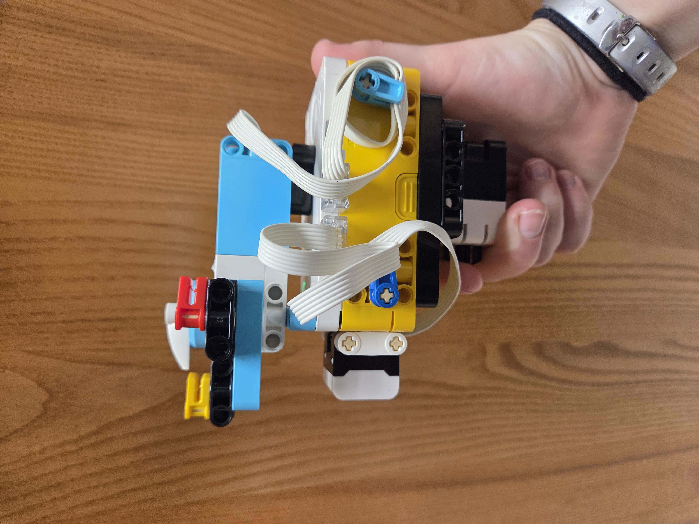
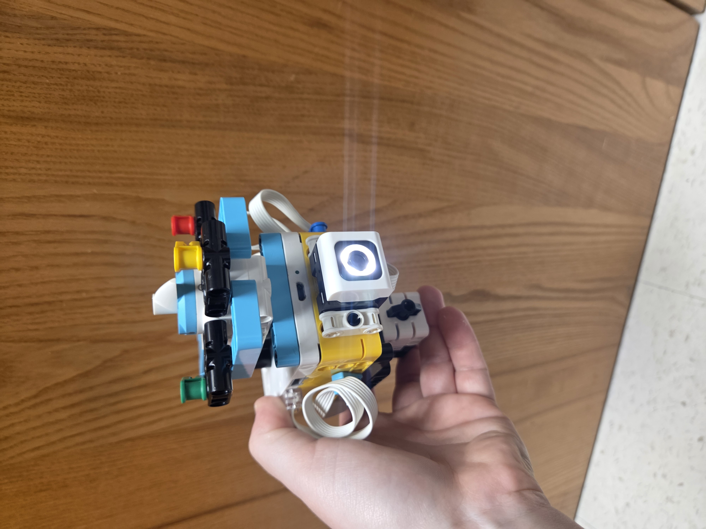
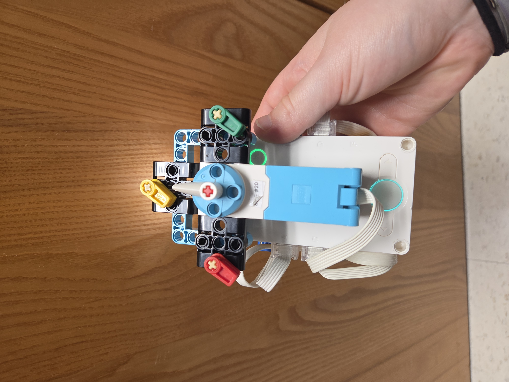

For this project, I created a device that uses nearest-neighbor classification to predict whether a fruit is an apple or an orange. It uses a color sensor instead of the ultrasonic sensor from the High or Low activity, with a similar setup and code.
I focused on making the device easy to use. I positioned the force sensor beneath the hub so it is easy to press while holding the device and aiming the color sensor. The color of the hub button indicates whether the device is in training or prediction mode, and either hub button can be used to switch between the modes. I also added indicators for the colors associated with the motor's positions, which can be interchanged.
# Setup: Color Sensor on port A, motor on port C,
# and Force Sensor on port D.
# The hub's middle display may be blocked, so the CONNECT button light
# indicates the mode: green for training, blue for prediction.
#
# Press either hub button to switch modes.
# Press the Force Sensor to record an example or make a prediction.
from hub import port, button, light
import runloop
import color
import color_sensor
import force_sensor
import motor
# Set the port where the Force Sensor is connected.
FORCE_SENSOR_PORT = port.D
# Store each training color reading with its matching motor position.
training_colors = []
training_positions = []
# Start in training mode.
training_mode = True
async def main():
global training_mode
# Set the motor's relative-position reference to zero.
# This resets the position reading without moving the motor.
motor.reset_relative_position(port.C, 0)
# Show that the program starts in training mode.
light.color(light.CONNECT, color.GREEN)
# Keep collecting examples or making predictions until the program stops.
while True:
# Either hub button toggles between training and prediction modes.
if button.pressed(button.LEFT) > 0 or button.pressed(button.RIGHT) > 0:
training_mode = not training_mode
# Set the CONNECT light to show the newly selected mode.
if training_mode:
light.color(light.CONNECT, color.GREEN)
print("Training mode")
else:
light.color(light.CONNECT, color.BLUE)
print("Prediction mode")
# Wait until both buttons are released so one press toggles only once.
while button.pressed(button.LEFT) > 0 or button.pressed(button.RIGHT) > 0:
await runloop.sleep_ms(50)
# The Force Sensor records a training example or starts a prediction.
if force_sensor.pressed(FORCE_SENSOR_PORT):
# Read the color sensor's red, green, blue, and intensity values.
new_color = color_sensor.rgbi(port.A)
if training_mode:
# Save the motor's current relative position with this color.
motor_position = motor.relative_position(port.C)
training_colors.append(new_color)
training_positions.append(motor_position)
# Show the saved example in the SPIKE App Console.
print("Saved training example:", new_color, motor_position)
else:
# Check that at least one training example is available.
if len(training_colors) == 0:
print("No training examples have been saved.")
else:
# Start by treating the first example as the closest match.
closest_distance = 1000000000
closest_position = training_positions[0]
# Compare the new color reading with each saved color.
for sample_number in range(len(training_colors)):
sample_color = training_colors[sample_number]
# Find the difference in each color-sensor reading.
red_difference = new_color[0] - sample_color[0]
green_difference = new_color[1] - sample_color[1]
blue_difference = new_color[2] - sample_color[2]
intensity_difference = new_color[3] - sample_color[3]
# Calculate squared color distance to compare the readings.
color_distance = (
red_difference * red_difference
+ green_difference * green_difference
+ blue_difference * blue_difference
+ intensity_difference * intensity_difference
)
# Keep the exact motor position for the nearest color.
if color_distance < closest_distance:
closest_distance = color_distance
closest_position = training_positions[sample_number]
# Move the motor to the exact stored position of the nearest color.
print("Moving to stored relative position:", closest_position)
await motor.run_to_relative_position(
port.C,
closest_position,
200
)
# Wait for the Force Sensor to be released before checking again.
while force_sensor.pressed(FORCE_SENSOR_PORT):
await runloop.sleep_ms(50)
# Pause briefly before checking the buttons and sensor again.
await runloop.sleep_ms(50)
runloop.run(main())